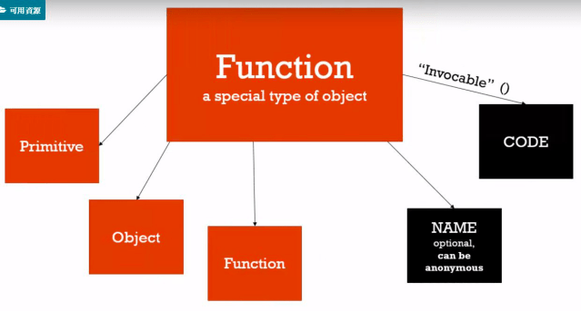
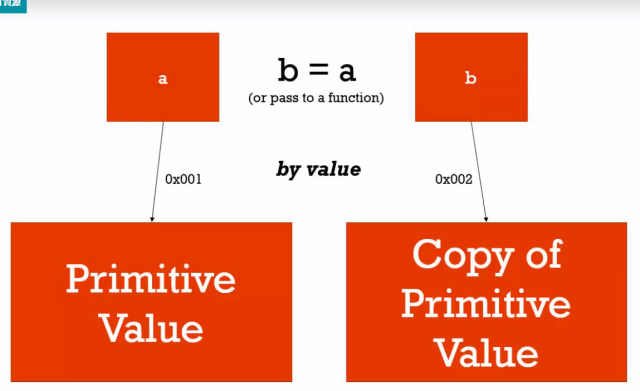
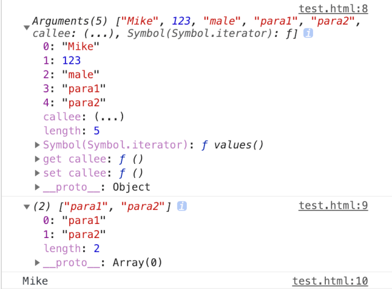

【課程紀錄】克服 JS 奇怪的地方 — 物件
NAMESPACE (命名空間)
a container for variables and functions
typically to keep variables and functions with the same name separate
Javascript 沒有命名空間，也不需要，物件可以代替命名空間
1 | var objectLiteral = { |
FIRST CALSS FUNCTION (一級函數)
EVERYTHING YOU CAN DO WITH OTHER TYPES YOU CAN DO WITH FUNCTION
assign them to variables, pass them around, create them on the fly.
1 | function greet() { |
function 也是 object

EXPRESSION (表示式)
A UNIT OF CODE THAT RESULTS IN A VALUE
it doesn’t have to save to a variable.
表示式會回傳一個值，不需要存在變數中也可以得到結果
1 | console.log(1+2) // 3 |
statement (陳述式)
陳述句不會回傳任何值， if 就是陳述句
函數陳述句
1 | function greet() { |
函數表示式
1 | var anonymousGreet = function() { |
By value & By reference

1 | // by value (primitives) |
argument(參數)
arguments其實就是parameters的意思，也就是說，arguments會包含所有你放入function中的參數值。
1 | function person(name, age, sex, ...other) { |

arguments回傳的值是斜體的 [ ] ，看起來很像陣列(array-like)，但它並不是真的陣列！所以arguments回傳的值並不具備所有陣列所具有的特徵。
展開運算子 spread(…)
把函數中許多的參數 (arguments) 或陣列中許多的元素 (elements) 形成一個新的變數。也不是真的陣列 (array-like)，斜體的 [ ]
傳入非預設的參數也可以取得，存放在變數中 (array-like)
立即呼叫的函數表示式(IIFEs)
1 | // using an Immediately Invoked Function Expression (IIFE) |
- Post title：【課程紀錄】克服 JS 奇怪的地方 — 物件
- Post author：Neil Yang
- Create time：2019-06-22 00:00:00
- Post link：https://des86532.github.io/2019/06/22/Javascript/object/
- Copyright Notice：All articles in this blog are licensed under BY-NC-SA unless stating additionally.